Trois pistes
Milestone, c’est une petite app que je fabrique : ta vie sur un fil, à côté de l’Histoire. On y pose un souvenir en une phrase (« road trip en Espagne l’été 2003 ») et il se range tout seul à sa date. La version actuelle marche, mais elle est fade. Voici trois pistes pour lui donner du caractère, avec une vie d’exemple inventée. Chacune se joue au doigt : touche « Jouer », ou ouvre-la en plein écran depuis ton téléphone.


Survol
ta vie vue d’avionLa frise devient une carte : ta vie entière tient dans l’écran, colorée décennie par décennie, et l’on plonge au pincement jusqu’à l’année puis au moment.
- Le geste
- Pincer, ou glisser le pouce le long du bord droit : vie entière, décennies, années, mois, avec un cran sous le doigt à chaque palier. Toucher une décennie y plonge.
- La récompense
- Le moment posé s’envole : la carte prend de la hauteur, survole ta vie, plonge à sa place, et il atterrit avec un rebond et une onde.
- L’Histoire et les années vides
- Les repères sont des noms de lieux en filigrane. De près, une année sans souvenir propose « Et en 1994 ? ».
- Ce qu’elle coûte
- La lecture en liste disparaît : on relit en survolant. C’est la plus lourde à rendre fluide sur iPhone, la carte est dessinée par l’app.
Les écrans


Poser, image par image
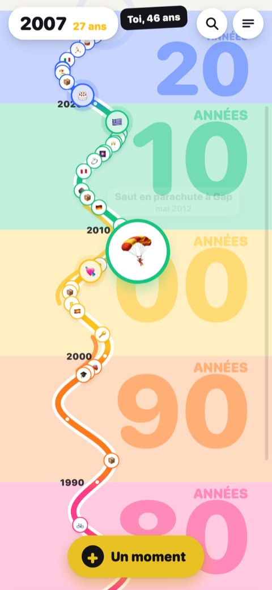
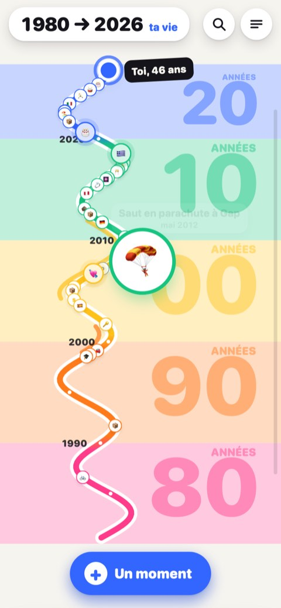
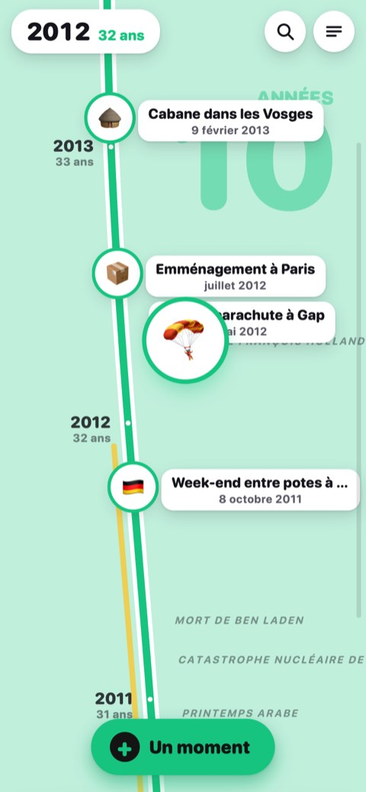
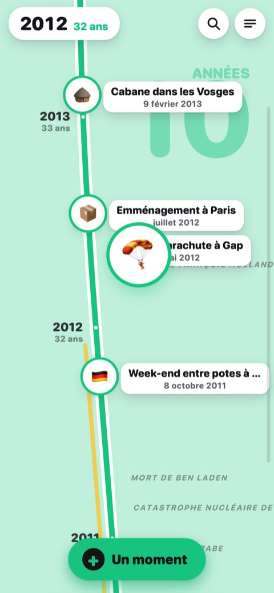
« Saut en parachute à Gap mai 2012 » : 🪂 deviné, vert des années 2010, la carte s’élève puis plonge sur mai 2012.
Album
ta vie en autocollantsChaque moment est un autocollant découpé, collé sur la page de son année. Les temps forts sont des brillants, les années vides des cases qui attendent.
- Le geste
- Garder le doigt sur un autocollant le soulève : il suit le doigt, penche avec l’élan, puis revient se coller. Dans la planche, on le fait glisser de côté pour changer la date.
- La récompense
- Coller : il se décolle de la planche, l’album file à la bonne page, ça claque, la page tressaille et le compteur prend +1.
- La fiche
- L’autocollant vient à toi et se retourne : au dos, l’âge en grand, la note, ce qui l’entoure. On feuillette en glissant, le mode deck revient de lui-même.
- Ce qu’elle coûte
- Le fil continu : la vie se lit par pages d’années. L’esprit collection peut sembler léger pour certains souvenirs ; un deuil reste un autocollant sobre, sans émoji ni éclat.
Les écrans


Coller, image par image
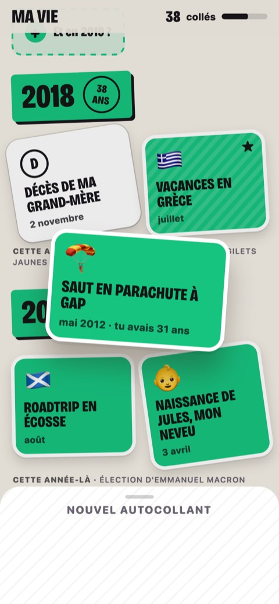
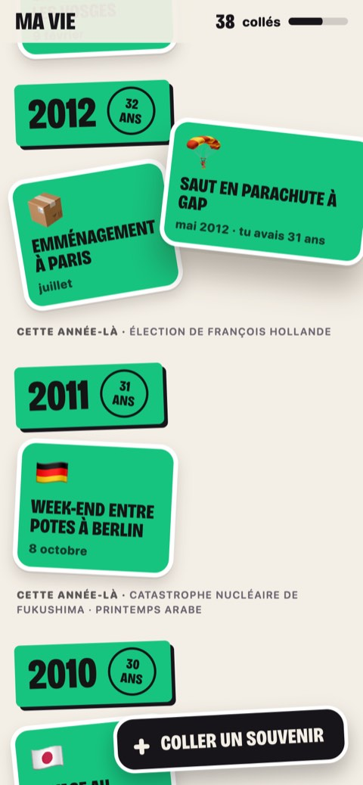
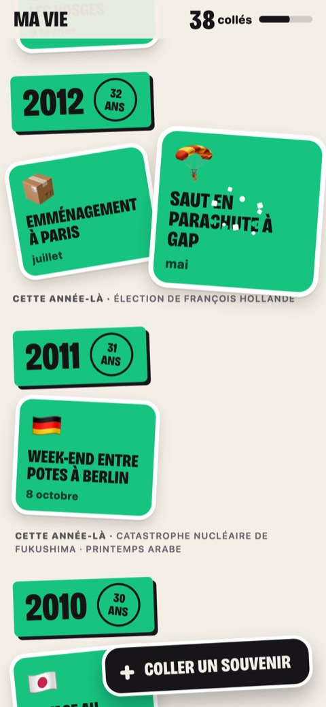
L’autocollant quitte la planche, rejoint 2012 et claque à côté de l’emménagement à Paris.
Fil vivant
la couleur du tempsL’écran entier prend la couleur de la décennie que tu traverses. Le fil ploie quand tu défiles vite et revient en oscillant ; chaque moment s’ouvre en plein écran, comme une story.
- Le geste
- Défiler : la couleur glisse d’une décennie à l’autre, le fil se tend puis vibre. Raconter teint tout l’écran de la couleur du moment ; on glisse la date de côté pour la corriger.
- La récompense
- La breloque tombe du haut de l’écran et le fil encaisse le choc. Au lancement, l’écho du jour s’ouvre seul, comme une story.
- La fiche
- Une story de l’année : l’âge en très grand, toucher à droite pour le moment suivant, glisser vers le bas pour refermer.
- Ce qu’elle coûte
- La vue d’ensemble : pas de vie entière d’un coup d’œil. Les grands aplats de couleur fatiguent plus vite en lecture longue.
Les écrans


Accrocher, image par image
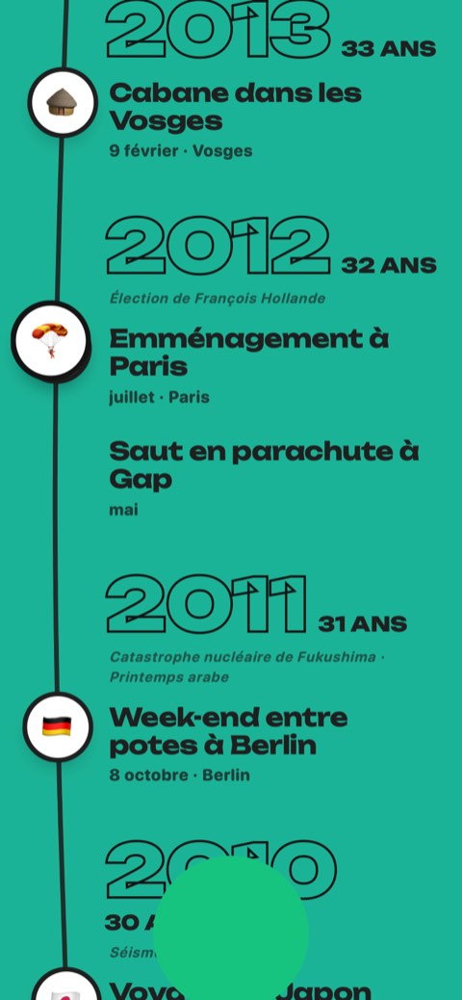
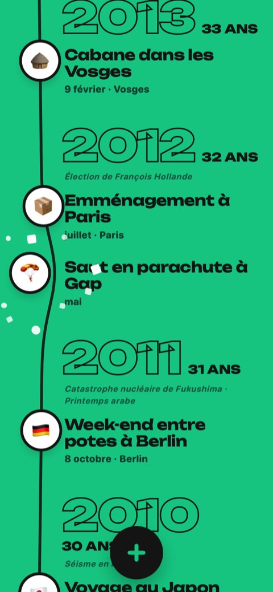
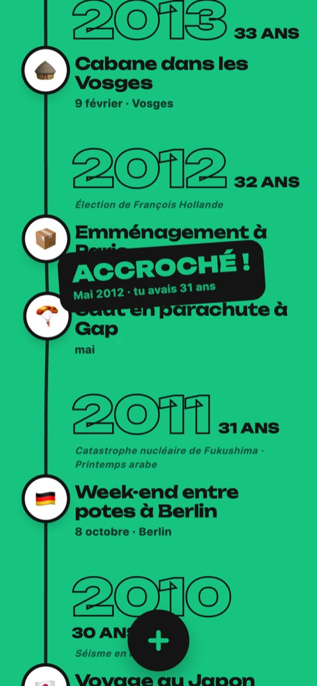
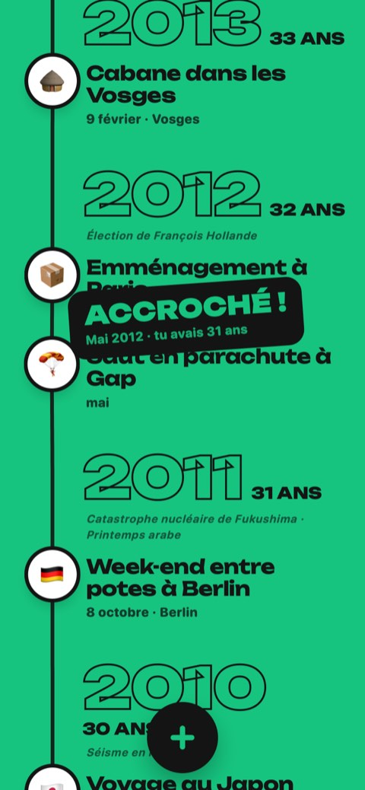
La breloque 🪂 tombe sur mai 2012, le fil se creuse sous le choc puis reprend sa ligne.
Dans les trois : l’émoji est proposé d’après la phrase et se change d’un toucher, sans catégorie imposée ; un deuil n’a ni émoji, ni gerbe, ni rebond ; la couleur suit la décennie ; mode sombre, « Réduire les animations » respecté. Ce sont des maquettes : rien n’est enregistré, et l’accueil, la recherche et les réglages ne sont pas encore dessinés.
Laquelle tu préfères, et pourquoi ?
Réponds-moi par message, même en un mot. Ce qui t’a agacé ou ce que tu n’as pas compris m’intéresse autant que ce qui t’a plu.